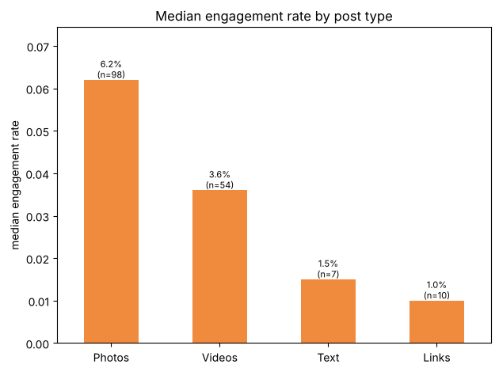
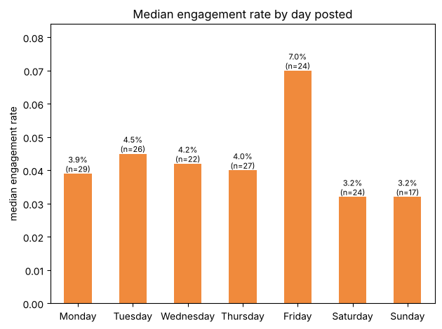
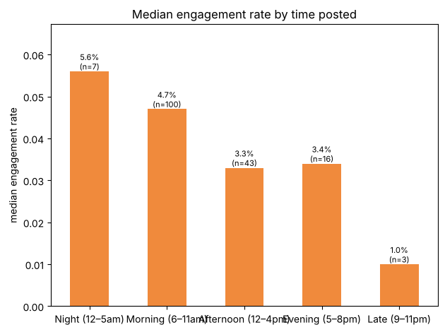
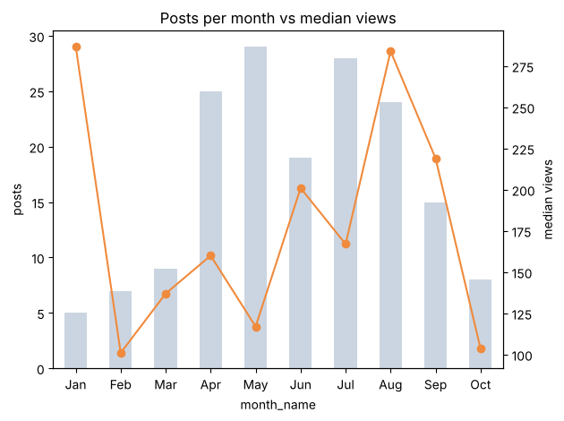

225Posts exported
169Original posts analyzed
52.7KTotal views
10Months of data (2026)
Key findings
| Question | Finding | Recommendation |
|---|---|---|
| Post type | Photos get the highest engagement (6.2% median vs 3.6% for videos), but videos reach more people (233 vs 150 median views). | Use photos for interaction, videos for reach. |
| Day | Friday posts get 7.0% engagement vs 3.2–4.5% on other days. | Schedule key promotions for Friday. |
| Time | Morning posts (6–11am ET) get 4.7% engagement vs about 3.3% in the afternoon and evening. | Keep posting around 9am. |
| Season | May–August is strongest (May peaks at 6.9%); February–March drop to about 1%. | Plan winter content and early-booking offers ahead of slow months. |
| Reshares | Posts shared from other pages get 45 median views vs 161 for original posts, with almost no interaction. | Post original content instead of reshares. |
Charts




Method
- Data: Meta Business Suite content export, Jan 1 – Nov 1, 2026, one row per post.
- Cleaning: renamed columns, converted publish times from Pacific to Eastern, and added day, hour, time of day, month, season, caption length and call-to-action flags. Group cross-posts and reshares of other pages were excluded from comparisons.
- Metrics: engagement rate = (reactions + comments + shares) ÷ views; click rate = clicks ÷ views. Medians are used because views are highly skewed by a few viral posts.
- Analysis: compared post type, day, time and month in pandas, then answered the same questions in SQL, including window functions (RANK, running totals, LAG).
Files
Limitations: about 10 months of data from two small pages; Meta's export provides views but no separate reach metric; groups with fewer than 5 posts are not compared.
← Back to all projects